Operating Documentation
Direction 5193574-800, Rev# 22
LightSpeed 7.X Service Methods
Module Version 3.0, Version Date 2/10/15
Operating Documentation |
Cover install process overview:
Illustration 1: Cover Installation Flowchart
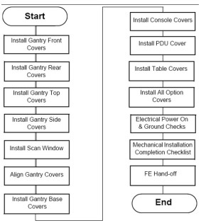
Move the gantry to the vertical position and the front cover next to the gantry.
Lift the cover onto the stud and attach the front cover:
Align the studs on both sides of the front cover with each associated receiver. The receiver is located on the gantry frame.
Illustration 2: Cover Stud and Mounting Bracket Receiver
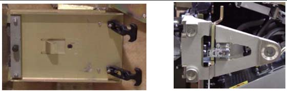
Insert the stud on one side into its associated receiver and attach the rubber retaining straps.
Insert the stud on the other side into its associated receiver and attach its rubber retaining straps.
| NOTE: | You may find it helpful to “lift up” on the cover to align the stud while attaching the rubber retaining straps. |
Reattach the upper and lower Cantrell brackets on both sides:
Remove the upper Cantrell brackets from the service position and rotate them into position over their associated retaining pins (see Illustration 3 and Illustration 4).
Illustration 3: Service Position of Upper and Lower Cantrell Brackets.
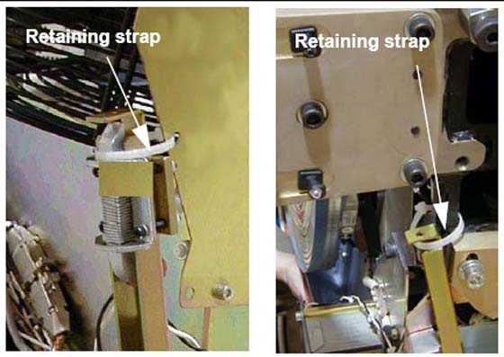
Illustration 4: Cover Retaining Pins (top and bottom)
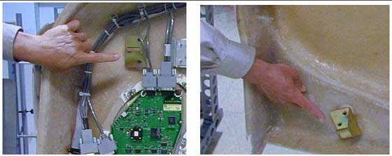
Press down firmly on the bracket and “snap” it into place. The locking mechanism on each upper bracket should lock the bracket securely into place. Do this on both sides (see Illustration 5).
Illustration 5: Locking Cover Brackets into Place
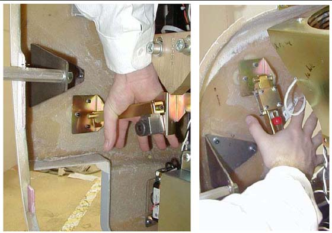
Remove the lower Cantrell brackets from the service position (Illustration 3), and rotate them into position over their associated retaining pins.
Press down firmly on the bracket and snap it into place (see Illustration 5).
Remove the dolly; disassemble it and store it safely away for later use.
Reattach the cables to the cover.
Reinstall the Mylar (scan) window.
Position the cover in the back of the gantry.
Attach the rear cover:
Align the studs on both sides of the rear cover with the receivers located on the gantry frame.
Insert the stud on one side into its associated receiver and attach the rubber retaining straps.
Insert the stud on the other side into its associated receiver and attach its rubber retaining straps.
| NOTE: | You may find it helpful to “lift up” on the cover to align the stud while attaching the rubber retaining straps. |
Reattach the upper and lower Cantrell brackets on both sides:
Remove the upper Cantrell brackets from the service position and rotate them into position over their associated retaining pins.
Press down firmly on the bracket and “snap” it into place. Do this on both sides.
| NOTE: | The locking mechanism on each upper bracket should lock the bracket securely into place. |
Remove the lower Cantrell brackets from the service position and rotate them into position over their associated retaining pins.
Press down firmly on the bracket and “snap” it into place.
| NOTE: | Adjustment of the Cantrell brackets can cause misalignment of the top and side covers. The upper and lower Cantrell brackets do not require adjustment during normal use. |
Remove the dolly, disassemble it, and store it safely away.
Reattach the cables to the cover.
Reinstall the Mylar scan window. Carefully bend the scan window and place it into the channel groove, provided in the covers.
| ||||
| Potential for Electric Shock. | ||||
| Gantry Power Is Present. | ||||
| Before you remove top covers, always make sure the three (3) power switches have been turned off. |
| ||||
| Potential for Personal Injury. | ||||
| Top Cover is Heavy. | ||||
| Follow the Removal Procedure. |
| NOTE: | For LightSpeed VCT 7.2 systems follow the procedures located in your Service Information CD Under Replacement>Gantry Enclosure. Listed as "Gantry Top Covers and Fan Removal." |
The top cover consists of two (2) pieces. Install the front and rear gantry covers, if not already installed.
Lift the top cover so that the cover is chest high. Fit the cover guides on the top of the cover into the rail slots on the gantry covers.
Slide the top cover up the front and rear covers onto the top cover ramp. The cover should snap into place in the top cover bracket.
Insert the cover-locking tabs (at the bottom of the top cover) into the slots on the gantry cover.
Check cover alignment. Adjust as needed.
Reconnect the fan power.
Repeat above steps 1-5 for the other cover.
To install a side cover, place it over the top cover and let the two (2) side cover latches slide behind the metal tabs, located on the top cover.
Use hex wrench to secure the side cover to front cover by turning the bolts a quarter turn.
| NOTE: | The front and rear covers must be installed before installing the scan window. |
Shape the scan window as shown in Illustration 6, and nest the scan window at the bottom of the opening between the front and rear covers, (Illustration 7) with the rivets in the 6 o’clock position. Remember the rivets must be in the 12 o’clock position when the mylar window is fully installed.
After you complete the initial seating of scan window, let the window slowly unfold, and work both sides of the window into position, starting at the bottom and finishing at the top.
Make sure you position the window with the rivets at the 12 o’clock position, and the mylar window slit at either the 3 or 9 o’clock position.
Illustration 6: Install Scan Window
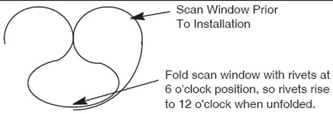
Illustration 7: Scan Window Nested between Front and Rear Cover
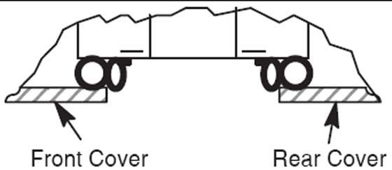
This section explains the adjustment capability available for the Gantry covers and guidelines for performing adjustments.
3mm, 5mm, 8mm, hex wrenches
The front and rear covers are held in a fixed vertical position by the cover locking mechanisms at the vertical middle of each cover on each side. The only adjustment capability is found on each of the cover Cantrells. See Illustration 8. One is located near each corner of the front and rear cover. Adjustments are best done at zero tilt.
Illustration 8: Cantrells
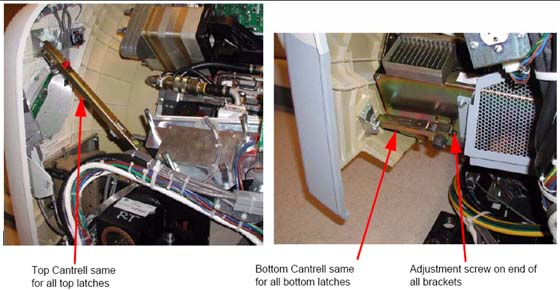
Remove the gantry side covers using a 8mm hex wrench to release the bottom latches. Refer to, for further details.
Disable gantry rotation, 120VAC and HVDC via the service switch panel.
Disconnect the fan power via the white molex connector (one for each top cover). Remove the top covers by lifting up and pulling to the side of the gantry.
Remove the scan window to avoid creases or kinks during cover movements.
Using a 5mm hex wrench, adjust the bolt on the gantry end of the cover cantrells (see Illustration 8) to lengthen or shorten the cantrell arm that will push or pull the cover corner. The distance between the inside edges of the front and rear covers will be typically 27" + 1/8” (689mm). Distance should remain the same as measured along the inside edges from top to bottom with both covers hanging level as seen with a level on the inside vertical edge.
Position the scan window in the opening to verify that it seats all the way around with no gaps. The scan window should seat easily if the front and rear covers have been adjusted properly. If not, go back and readjust such that the scan window seats properly. There is no easy solution other than adjusting and looking for fit.
The top covers rest in a top bracket that is mounted to the stationary gantry frame and subsequently just rest on top of the front/rear covers. There are also two alignment fingers on the outer edge of the top covers that need to sit in brackets on the front/rear covers.
Illustration 9: Top Cover Bracket
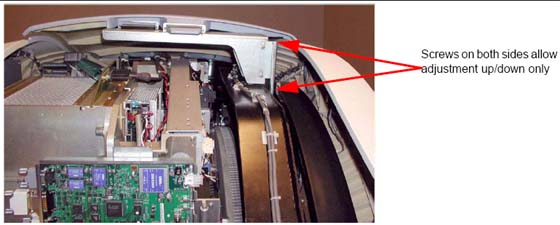
Set the top covers back on the gantry and look for proper fit. The top covers should rest on the front/rear covers all along the edges. If they do then skip the rest of this section.
If the top covers do not rest on the gantry at the top then lift them back off and use a 5mm hex wrench to loosen the bolts that hold the top cover bracket for adjusting vertical alignment to allow the top covers to rest on the front and rear covers.
The brackets on the front/rear covers for the fingers on the outer edge of the top covers are adjustable using a 3mm hex wrench and sliding the bracket till it lines up with the top cover finger. (See Illustration 10)
Illustration 10: Top Cover Fingers
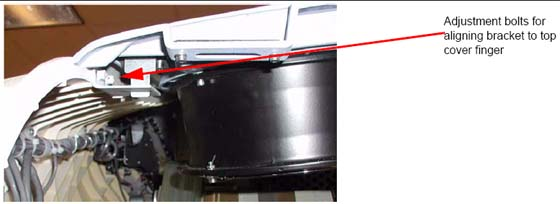
Verify the top cover tapered edges fit over the lip along the top edge of the front/rear covers. If not, go back to Section 1.6.3.1 and readjust the cantrells as necessary.
When done adjusting the top covers, reconnect the fan power molex connections.
The side covers merely hang from the top covers by two fingers that are not adjustable. When set into the top covers, the side covers should hang straight down with the tapered edges fitting over top of the lip of the front/rear covers.
3mm and 8mm hex wrenches
| NOTE: | Tighten means torque to 2.3 Nm |
Illustration 11 shows the gantry base covers. There are two side covers, two rear covers and a single front cover.
Start with the rear covers (Shown as items 6 and 7). Using an 8 mm hex wrench twist the 3 twist locks counter-clockwise to release the locks and pull each cover out from the back of the gantry.
Remove the side covers (shown as items 4 and 5) if needed by removing the one screw on the side (3 mm hex wrench) and 2 screws the interface panel on the back side of the gantry, then slide the side cover away from the gantry to the side.
| NOTE: | The side covers slide around the Interface Panels. No need to remove cabling or move the interface panels. |
Remove the base front cover (shown as item 3) if necessary by removing one screw on each end to release the cover from the brackets. Lift the cover up and over the foot switch cover and away from the gantry.
To reinstall the gantry base covers, reverse the above steps, putting on the covers in the order of front, sides then rear covers
Illustration 11: Gantry Base Covers Installed
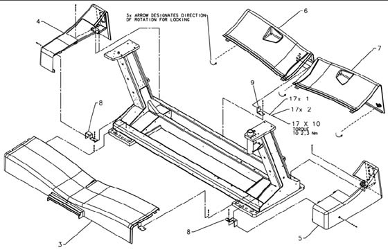
Position base front assembly (item 3) on gantry base with bracket slots aligned to gantry holes. Center cover left to right and attach with (4) hardware items 1, 2, and 10 as shown and tighten.
Assemble (2) brackets (item 8) to gantry base using (4) hardware items 1, 2, and 10. Finger tighten hardware with brackets moved outward to end of slots. If not already replaced, remove (2) shipping brackets and replace with brackets (items 11 and 12) and reattach IPC panels. Install side cover assemblies (items 4 and 5) and base pushing brackets (item 8) inward until properly aligned with front cover.
Assemble last bracket (item 9) loosely to gantry base with (2) hardware items 1, 2, and 10. Install rear cover assembly (item 6) to base properly aligned to side cover (item 4). Attach rear cover assembly to bracket with hardware items 1, 2, and 10 tightening all fasteners. Lock latch as shown.
Place rear cover (item 7) on gantry base aligned to side cover assembly (item 5). Lock both latches as shown.
Illustration 12: HD Base Covers Installed
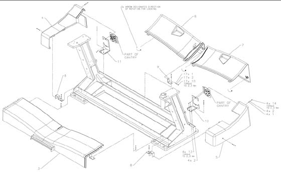
Install the footswitch cover using three (3) screws (see Illustration 13).
Illustration 13: Footswitch Cover Installation
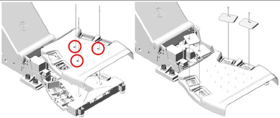
Install cover caps on each pad.
Illustration 14: Footswitch Pad Caps
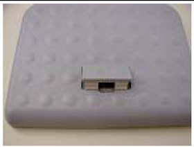
Install the four (4) foot pads onto the footswitch assembly.
| Required Persons | Preliminary Reqs | Procedure | Finalization |
| 1 (FE or mechanical supplier) | 15 minutes labor on-site |
Medium flat blade screw driver
Locate the front and side console covers.
Position the front cover between the keyboard desktop side rails. This may be snug.
Notice that there are three tabs on the top of the console chassis that hook onto the cover. Raise the cover and place it onto the three tabs.
Push down on the cover to seat it.
Use the two captured flat blade screws in the cover to secure it to the console chassis.
| NOTE: | The captured flat blade screws are quarter-turn screws. Do not over tighten them. |
Remove the side covers from their packaging. Each cover hooks onto two tabs on the top of the console chassis.
Raise the cover and place it onto the two tabs.
Push down on the cover to seat it.
Use the two captured flat blade screws in the cover to secure the cover to the console chassis.
| NOTE: | The captured flat blade screws are quarter-turn screws. Do not over tighten them. |
Remove screws (2) on tape switch.
Remove back under-side covers (2) plus black screws.
Undo the 2 red/black connectors.
Remove all six (6) 4mm hex-head screws.
Install two (2) 4mm hex-head screws. Leave them loose until the bottom screws are installed.
Install 6nd wire using one (1) 4mm hex-head screw.
Install white washer between grey base and panel. Insert Phillips screw into the bushing.
Tighten top screws. (Torque 8 lb-in)
| NOTE: | Second panel over laps the first panel |
Install two (2) 4mm hex-head screws. Leave them loose until the bottom screws are installed.
Install 6nd wire using one (1) 4mm hex-head screw.
Insert white washer between grey base and panel. Insert Phillips screw into the bushing.
Tighten Phillips screws. Tighten top screws.
Install with two (2) Phillips screws. Reconnect cable.
With the side covers toward table front, align the tabs on the cover with the slots on the table.
Slide the cover toward the table until it stops.
Slide the cover toward the back of the table to lock the cover in place.
Install the two (2) 4mm hex-head screws on each end to secure cover. (1700 Table: Install one (1) screw.) Torque 2.7 Nm.
Remove the two (2) 4mm hex-head screws that secure the side cover. (1700 Table: Remove one (1) screw)
Slide the cover toward the gantry until the locking tabs disengage and the cover is free.
Pull the cover away from the table to remove.
Store in a safe place.
The table handle, pad, extender pad and logo should be blue. If they are not, you must change them.
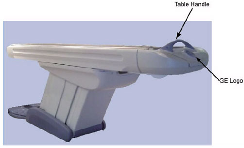
Follow the instructions that came with each of your optional components.